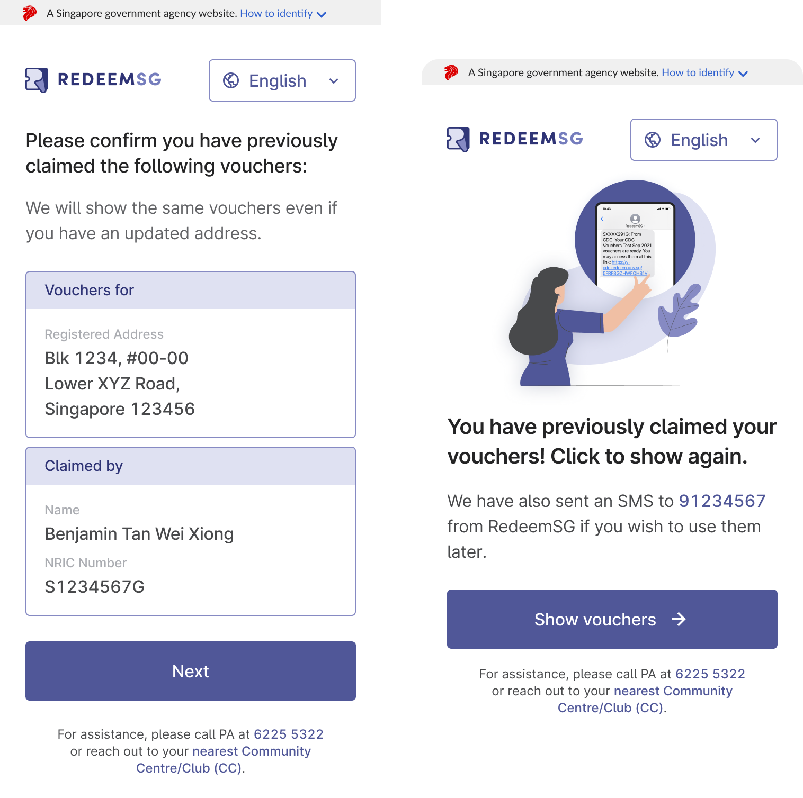

A Singapore Government Website
A Singapore Government Website
Updated 18 November 2021
RedeemSG is a voucher system for the Singapore Government. It helps to digitize vouchers and redemption tracking, thereby eliminating the manual work of collecting vouchers and digitizing records. This comprises of:
Any government agency and its affiliate partners can use RedeemSG to create, send and track vouchers. We also assess requests from charities on a case by case basis. To create and gain access to a campaign, or to gain access to the portal, please contact us at feedback@redeem.gov.sg.
For Government agencies who wish to onboard, we are currently accepting new use cases launching from May 2022 onwards.
We are currently also accepting merchants to be onboarded to the CDC Vouchers campaign. Merchants can indicate interest here.
If you are a voucher applicant/ recipient, you will need to apply for vouchers at the relevant campaign organizer sign up page.
Currently we are only onboarding merchants for the CDC Vouchers campaign. Please refer to the CDC Vouchers - Merchants page here for more info.
We will only be able to explore integration with merchants from May 2022 onwards.
For more info and terms on the CDC Vouchers Scheme, please refer to their website here.
Please visit the following link go.gov.sg/cdcv to claim your CDC Voucher.
The voucher link will be sent to your verified mobile number. Please note that the masked NRIC
portion and exact voucher link URL blurred in white may vary.

You can then use the voucher by selecting the amount you want to use.
Then, presenting the voucher QR at participating merchants that can be identified by the CDC Voucher decal.
There is no need to download a mobile app to claim the voucher.
All Singaporean households are eligible for the scheme. Each household can claim $100 in CDC vouchers that can be redeemed at participating merchants.
As the intent of this current tranche is to foster a sense of solidarity amongst Singaporeans and support heartland merchants and hawkers, the eligibility criteria for this tranche is different from previous CDC voucher tranches where only some households were eligible for the vouchers.
You can redeem the CDC voucher at any of the participating merchants that can be identified by this particular CDC Voucher Decal.
The campaign runs till 31 Dec 2022.
Yes. You may head to a nearby Community Centre/ Club for assistance. They will be able to assist you by providing you with a paper voucher that you can similarly present to participating merchants to be scanned.
RIf you have forgotten your Singpass password, you may reset your password online here or head to a nearby CC who will be able to assist you with resetting your password.
Please check if your unique voucher link starts with the following prefix https://voucher.redeem.gov.sg". The sender name is “RedeemSG”. Please do not trust vouchers starting with other prefixes.
A typical SMS from RedeemSG will look something like this. Please note that the masked NRIC
portion and exact voucher link URL blurred in white may vary.
If you are unsure of whether the voucher is from RedeemSG and the Singapore Government, please check
with PA’s hotline 62255322 or email feedback@redeem.gov.sg.
Yes, the vouchers can be shared with your family members. You can share your voucher by:

To retrieve the vouchers again, please visit the sign up link go.gov.sg/cdcv and login with Singpass again. You will be able
to get
your vouchers sent to you via SMS. This sign up link is also shown on the letter sent to your
household.

You may redeem your voucher at any participating merchants that can be identified with the CDC
Vouchers decal.
You may redeem your voucher by selecting the amount you want to use and presenting it at a
participating merchant that can be identified with the CDC Vouchers Decal.
You can check how much you have left by visiting the voucher link sent to you via SMS.
Once your voucher QR is scanned by participating merchants, the voucher will automatically refresh
and update to show it is redeemed at a particular stall in a few seconds- see below.
If the voucher value is more than the purchase value, any unused amount / remaining value of the voucher will not be refunded.
In response to ground feedback and suggestions received from participating merchants and hawkers during the first two tranches, we have digitized to improve the voucher claiming and redemption experience:
This is the first time CDC vouchers are digital (all previous tranches of CDC Vouchers have been paper vouchers). Open Government Products, Govtech worked closely with CDC to identify the key problems digital vouchers aimed to tackle, and conducted 8 on-the-ground trials with real merchants and residents to ensure the final solution is intuitive, inclusive, and easy to use.
We had previously trialled a version of the “SGQR” model in which a customer would scan the merchant’s QR code. While this is technically possible, we identified it would come with the following drawbacks:
To ensure the digitally savvy will not be excluded by the digital scheme, we have designed the solution such that there will be the same workflow for both merchants and residents for both paper and digital vouchers.
The above reduces the overall cost on taxpayers’ monies in operationalising the system by a factor of almost 40%.
After consultations with merchants, we have determined that the $2, $5 and $10 were the 3 best preferred denominations to cater to a range of purchases - e.g. to cover purchases of both drinks and food at the hawkers and other items/ services at heartland shops (e.g. groceries, haircuts).
The vouchers are in fixed denominations to provide the ease of reconciliation for merchants and reduce the chance for errors to occur when consumers key in the amount. Having it in fixed denominations also takes reference from the terms of use for vouchers by other commonly used vouchers - e.g. NTUC vouchers, grab vouchers.
CDC digital vouchers are designed to be redeemed specifically at heartland merchants and hawkers to support them as their businesses were negatively affected by the pandemic.
If you are a merchant, you may:
RedeemSG allows merchants to easily accept Government-issued vouchers using the RedeemSG Merchant app. The key benefits are:
Upon registration of interest, a staff would be in touch with you to conduct the onboarding session if you are eligible. During the session, the staff will provide you with the 6-character shop code you require to log in. Separately, an SMS will also be sent to you with the unique shop code.
Yes! Your staff can download the RedeemSG Merchant app using their own device,
and log-in using the
same shop code that was issued to you via SMS. You can also find your shop code
in the RedeemSG Merchant app.

They will be able to scan vouchers, and view transactions and payouts, but will not be able to edit any merchant details such as address or bank details.
Yes, in order to enable this, you can sign-up each branch as a single shop account and that shop will be issued its own shop code. Staff will then only be able to see that particular shop’s transactions.
To update your shop information, contact information or payment details, please reach out to your CDC Ambassador or call PA at 6225 5322.
To accept CDC vouchers, open the RedeemSG Merchant app on your phone and click on
‘Scan QR’ to scan the CDC vouchers presented by customers. You can accept all
voucher QR codes as long as it has the CDC Voucher identifier as shown.

Upon successful scanning, you should see a “Success!” message shown on your
RedeemSG Merchant app. You can also find a confirmation of the transactions you
have scanned by going to the ‘Transactions’ page, and checking that it has
appeared under that particular day’s transactions.

For a more complete set of FAQs on the programme, please refer to the CFHP FAQs here. More info is also found on the CFHP site.
Please refer to this link for the process.
Please check if your voucher starts with the following prefix "https://v.redeem.gov.sg". The sender name is “RedeemSG”. Please do not trust vouchers starting with other prefixes.
The typical SMS from RedeemSG will look something like this:

A typical Redeem voucher will look something like this - see below.
LED Light Vouchers ($25)

Refridgerator Vouchers ($150)

Shower Fittings ($50)

Vouchers cannot be used again once they are redeemed.
Please visit this link to see the list of merchants.
Please contact nea@redeem.gov.sg for help. We will be able to void the voucher that is being resold.
Voucher System for the Singapore Government